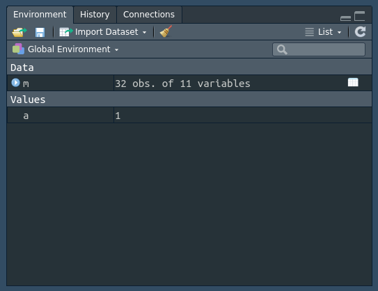
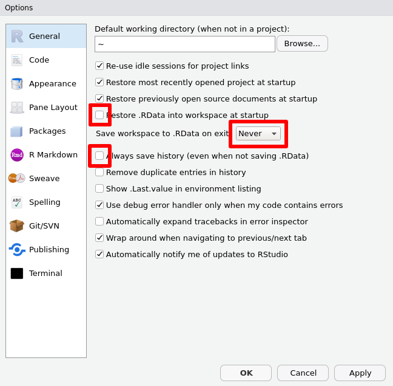

3 .RData e histórico
O primeiro passo para o workflow ideal de análise de dados já pode se provar bem complicado se você for o tipo de pessoa que não muda os ajustes padrões do RStudio. A primeira coisa que eu vou pedir que você faça é desativar a memória do R.
Isso parece ser é bastante drástico. Caso você não saiba do que eu estou
falando, faça o seguinte:
- Abra o RStudio e crie um novo arquivo;
- Gere algumas variáveis e salve o arquivo em qualquer lugar;
- Feche o RStudio e
- Abra ele de novo.
Agora observe a aba Environment (Ambiente) do seu RStudio. As variáveis que você criou estão lá? Se sim, isso é a “memória” do seu R trabalhando a seu favor.
No meu computador eu criei um arquivo chamado teste.R com o seguinte código:
a <- 1
m <- dplyr::as_tibble(mtcars)Ao executá-lo, o meu ambiente ficou assim:

A grande questão é que, mesmo depois de fechar e abrir o RStudio, o meu ambiente
não mudou nada! Isso só é possível porque o R cria, por padrão, dois arquivos
secretos no seu computador: o .RData e o .Rhistory. O objetivo deles é
armazenar todos os objetos que foram criados na sua sessão e todos os comandos
que você executou mesmo que o R não esteja rodando no seu computador; assim,
quando você reinicializa o R, ele lê esses arquivos e reconstrói tanto o seu
ambiente quanto o seu histórico de comandos.
À primeira vista isso parece uma funcionalidade honestamente incrível. O fato de o R ter memória permite que você não se preocupe tanto com seus dados e possa dormir tranquilo sabendo que pode fechar o RStudio sem perder nada da sua sessão. É quase como se você pudesse parar uma análise no meio e retomá-la a qualquer momento.
Mas a realidade é muito mais sombria do que parece… Ao permitir que o R lembre tudo por você, não há nenhum insentivo para que o seu código seja de fato reprodutível.
3.1 Consciência correta
Um dois princípios do Nobre Caminho Óctuplo é denominado Consciência Correta. Algumas interpretações dele sugerem que esse princípio gira em torno da resistência aos desejos, à retenção dos ensinamentos budistas, mas aqui eu me refiro ao seguinte conceito:
Consciência Correta: nunca esteja distraído, esteja consciente do que faz. A consciência permite que um não deseje ou se prenda a nenhum estado ou objeto transitório.
Assim, no Zen do R, sua tarefa será estar sempre consciente do que programa
e nunca deixar esta tarefa na mão da sua ferramenta. Isso implica em abandonar
o conforto do .RData e do .Rhistory para ser obrigado a sempre programar
de forma reprodutível.
3.2 Porque desistir desse recurso
Existem dois motivos principais para adotar essa atitude radical, ambos com consequências bastante observáveis no dia-a-dia.
O primeiro e talvez mais importante diz respeito ao código. Note que, ao abrir
o arquivo teste.R de novo, as duas linhas que usei para criar os objetos
essencialmente perderam suas funções. Por já estarem prontamente disponíveis
no ambiente, eu não tenho nenhuma necessidade real pelo código que os gera!
Nessa hora, um programador incauto pode cometer o erro de alterar ou deletar essas linhas sem notar que o fez. Neste caso é fácil lembrar qual é o código correto, mas normalmente essa é uma tarefa consideravelmente mais difícil. Desta forma, não permitir que o R lembre dos seus objetos por você faz com que o código de geração tenha que ser executado toda vez que a sessão for aberta; a chance de um erro no código passar batido por muito nesse cenário é consideravelmente menor e, consequentemente, a sua chance se conseguir resolvê-lo sem maiores problemas é proporcionalmente maior.
Já a segunda consequência de manter a memória do R funcionando é um pouco menos sutil: o que será que acontece quando você estiver trabalhando com objetos muito grandes? Geralmente queremos trabalhar com bases pesadas na memória o mínimo de tempo possível, então o ideal é tratá-la e já salvar o resultado deste processo em um arquivo intermediário para que ele possa ser carregado somente quando necessário.
Com o .RData sendo salvo, no entando, toda vez que você abrir o seu R a base
gigante será carregada imediatamente, mesmo que você não quisesse trabalhar com
ela! A melhor forma de não ter que controlar quais objetos devem ou não ficar
no ambiente ao fim de uma sessão é desabilitando essa funcionalidade como um
todo.
3.3 Como desligar a memória do R
O processo de desabilitar o .RData e o .Rhistory é bastante simples e afeta
todos os projetos do seu computador, então você só precisará fazer isso uma vez.
Basta selecionar Tools > Global Options… na aba de ferramentas do RStudio
e então ajustar três configurações. No final sua página das opções gerais deve
ficar como na imagem abaixo:

Feito isso, você provavelmente vai demorar um pouco para se acostumar com a ausência da memória. Esse desconforto temporário é esperado, mas resista ao impulso de habilitar os recursos novamente porque no longo prazo os benefícios serão enormes.